조경기사 (2018-04-28 기출문제)
1과목: 조경사
1. 12단의 테라스와 캐스케이드, 차경의 정원으로 유명한 인도무굴 왕조의 정원은?
- 샤리마르 바그(Shalimar Bagh)
- 니샤트 바그(Nishat Bagh)
- 아차발 바그(Achabal Bagh)
- 이티맛드 우드 다우라(I timad-ud-Daula)묘
(정답률: 76%)

2. 중국 소주의 정원 중 화려한 정원 건축물이 많고 허와 실, 명암대비 등 변화있는 공간처리와 유기적 건축배치를 가진 것은?
- 졸정원
- 사자림
- 작원
- 유원
(정답률: 70%)
3. 다음 중 르네상스 시대 로마의 대표적인 3대 별장에 속하지 않는 것은?
- 카렛지오장(Villa Careggio)
- 란테장(Villa Lante)
- 데스테장(Villa D'Este)
- 파르네제장(Villa Farnese)
(정답률: 80%)
4. 다음 한·중·일 정원에 관한 설명 중 틀린 것은?
- 일본 무로마찌(室町)시대의 용안사(龍安寺)는 사실적(寫實的) 조경의 대표적인 것이다.
- 조선시대 소쇄원(瀟灑園)의 주요 조경식물은 송(松), 죽(竹), 매(梅), 국(菊) 이었다.
- 태호석(太湖石)은 북송(北宋)시대 정원의 인공 석산(石山)의 재료이다.
- 조선시대 경복궁 경회루원은 방지와 3개의 방도로 축조했다.
(정답률: 70%)
5. 축조물의 형태에 있어서 다른 셋과 같은 유형이 아닌 것은?
- 피라미드(Pyramid)
- 아도니스원(Adonis garden)
- 공중공원(Hanging garden)
- 지구라트(Ziggurat)
(정답률: 71%)
6. 강릉 선교장에는 주택 전면부에 방지방도(方池方島)가 조성되어 있다. 이 연못에 있는 정자의 명칭은?
- 활래정
- 농산정
- 부용정
- 하엽정
(정답률: 73%)
7. 유명한 조경가와 대표적인 작품을 짝지은 것 중 옳지 않은 것은?
- Olmsted – Central Park
- Paxton – Crystal Palace
- Michelozzi – Villa Medici
- Brown – Stowe Garden
(정답률: 58%)
8. 세계 제1차 대전 후 루드비히 레서(L. Lesser)가 제창한 대표적 독일 조경은?
- 분구원
- 생태원
- 야생동물원
- 폴크스파크(Volkspark)
(정답률: 64%)
9. 고구려 시대의 산성과 도성이 맞게 짝지어진 것은?
- 환도산성 - 안학궁성
- 흘승골성 - 국내성
- 대성산성 - 안학궁성
- 환도산성 - 장안성
(정답률: 60%)
10. 우리나라 고려시대의 대표적인 궁궐은?
- 안학궁
- 국내성
- 만월대
- 칠궁
(정답률: 63%)
11. 르 노트르의 조경양식에 영향을 받아 축조된 것으로 알려진 중국의 정원은?
- 서화원
- 옥천산 이궁
- 원명원
- 상림원
(정답률: 80%)
12. 계성의 원야에서 기술한 차경수법 중 시선의 높낮이와 관계 있는 것은?
- 일차(逸借)
- 석차(席借)
- 부차(俯借)
- 수차(水借)
(정답률: 69%)
13. 처음으로 대가구를 설정하고, 보도와 차도를 완전히 분리했으며 쿨데삭(cul-de-sac)을 도입한 곳은?
- Chicopee, Georgia
- Greenbelt, Maryland
- Radburn, New Jersey
- Welwyn, Herfordshire
(정답률: 85%)
14. 근대 도시공원계통 수립의 선구자는?
- 다니엘 번암(Daniel Bunharm)
- 찰스 엘리어트(Charles Eliot)
- 칼버트 보(Calvert Vaux)
- 프레데릭 로 옴스테드(Frederick Law Olmsted)
(정답률: 70%)
15. 알함브라 궁원 사자의 중정에 있는 12마리 사자가 받치고 있는 수반과 관련된 사조는?
- 비잔틴
- 로마네스크
- 고딕
- 로코코
(정답률: 71%)
16. 일본의 석조원생팔중원전(石組園生八重垣傳)에 소개된 오행석(五行石) 중 체동석(體胴石)은 어느 것인가?
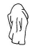
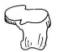
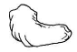
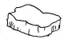
(정답률: 71%)
17. 이집트 주택정원의 특징으로 가장 거리가 먼 것은?
- 입구에는 탑문(pylon)이 설치되어 있다.
- 원로에는 관개수로와 정자(arbor)가 있다.
- 장방형의 화단 · 연못 · 울타리 등이 배치되어 있다.
- 수목의 식재로 담을 허물고 장식적, 상징적 정원을 조성하였다.
(정답률: 76%)
18. 고려 말 탁광무가 전라남도 광주에 조성한 정원은?
- 임류각
- 팔석정
- 천천정
- 경렴정
(정답률: 71%)
19. 프랑스 정원에 관한 설명으로 틀린 것은?
- 대칭적 균형(均衡)을 중요시 했다.
- 정원을 기하학적 모양으로 만들었다.
- 본격적 규모로 만들어진 것은 보르비콩트(Vaux-Le-Vicontte)이다.
- 구릉과 산악을 평탄하게 하고 파르테르(Parterre)를 조성했다.
(정답률: 75%)
20. 로마 근교의 바그나이아에 있는 전원형 별장으로 빛의 분천, 거인의 분천, 워터체인, 돌고래 분천 등이 있는 곳은?
- 빌라 알도브란디니
- 빌라 데스테
- 빌라 감베라이아
- 빌라 란테
(정답률: 63%)
2과목: 조경계획
21. 공원 내에 설치되는 화장실에 대한 계획기준으로 가장 거리가 먼 것은?
- 청결감이 나타나게 디자인한다.
- 환기와 채광이 가장 중요하다.
- 습기나 그늘이 많은 곳에 배치한다.
- 도로로부터 쉽게 접근하도록 한다.
(정답률: 82%)
22. 자연환경 조사 중 토양 단면조사의 설명으로 틀린 것은?
- 토양단면조사는 식물의 생장에 가장 중요한 환경인자인 토양의 수직적 구성 및 형태를 분석한다.
- A층은 광물토양의 최상층으로 외부환경과 접촉되어 그 영향을 직접 받는 층이다.
- B층은 대부분의 토양수를 보유하는 층으로 식물의 뿌리 발달에 가장 큰 영향을 미치는 층이다.
- C층은 외부 환경으로부터 토양 생성 작용을 받지 못하고 단지 광물질이 풍화된 층이다.
(정답률: 57%)
23. 국토의 계획 및 이용에 관한 법령 상 도시계획 기반시설인 “광장”의 종류로서 규정되어 있지 않은 것은?
- 건축물부설광장
- 미관광장
- 일반광장
- 지하광장
(정답률: 55%)
24. 다음 설명의 ( )안에 가장 적합한 용어는?
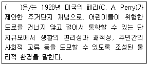
- 가든시티
- 근린주구
- 스몰블럭
- 커뮤니티
(정답률: 78%)
25. 생태적 결정론에 대한 설명으로 옳지 않은 것은?
- 생태적 계획의 이론적 뒷받침으로서 미국의 Ian McHarg 교수가 주장한 것이다.
- 환경계획을 자연과학적 근거에서 인간의 환경적응 문제를 파악하고자 하였다.
- 자연과 인간, 자연과학과 인간환경의 관계를 생태적 질서를 통하여 규명하고자 하였다.
- 자연의 경제적 가치를 중요시하고 이를 극복해야 할 대상으로 파악하고자 하였다.
(정답률: 73%)
26. 공원녹지 관련법 체계가 상위법에서 하위법으로의 흐름을 바르게 나타낸 것은?
- 국토기본법 → 도시공원 및 녹지 등에 관한 법률 → 국토의 계획 및 이용에 관한 법률
- 도시공원 및 녹지 등에 관한 법률 → 국토의 계획 및 이용에 관한 법률 → 국토기본법
- 국토의 계획 및 이용에 관한 법률 → 국토기본법 → 도시공원 및 녹지 등에 관한 법률
- 국토기본법 → 국토의 계획 및 이용에 관한 법률 → 도시공원 및 녹지 등에 관한 법률
(정답률: 76%)
27. 자연경관지역을 계획하는 올바른 방법이 아닌 것은?
- 경관의 질을 강조하는 요소를 도입한다.
- 구성요소 중 부조화 요소를 제거한다.
- 대조(contrast)를 통하여 통일감이 형성되어도 대조는 피한다.
- 시설이나 사용공간이 경관의 구성요소가 되도록 한다.
(정답률: 74%)
28. 레크리에이션 계획의 접근방법에 대한 설명 중 옳은 것은?
- 자원형은 한계수용력과 환경영향을 지표로 한다.
- 행태형은 과거의 참여패턴이 장래의 기회를 결정한다는 것을 전제로 한다.
- 활동형은 대도시 또는 지역레벨의 대상지에 적용하는 기법이다.
- 경제형은 이용자 선호도와 만족도가 지표이다.
(정답률: 57%)
29. 다음 중 실시설계 단계에서 작성하는 것이 아닌 것은?
- 버블 다이어그램
- 내역서
- 시설물 상세도
- 특기시방서
(정답률: 72%)
30. 도로 및 동선계획에서 동선의 패턴 형태와 그 특징에 대한 설명이 틀린 것은?
- 격자형: 시각적으로 단조롭고 불필요한 통과교통이 발생할 수 있다.
- 방사형: 도시중심의 상징성을 부여하고 각 도로의 방향성을 부여할 수 있다.
- 선형: 도로의 구간 내에서 교통이 원활하지 않을 수 있으나 교통 서비스 효율이 높다.
- cul-de-sac: 국지도로나 소규모 지역의 도로계획에 적용가능하며 블록단위별 자기 완결성을 가진다.
(정답률: 61%)
31. 녹지자연도(Degree of green naturality)에 대한 설명으로 옳지 않은 것은?
- 녹지자연도 0등급은 개발지역이다.
- 자연지역은 이차림, 자연림, 고산자연초원으로 구분한다.
- 녹지자연도는 우리국토 전체를 개발지역, 반자연지역, 자연지역, 수역으로 나눈다.
- 녹지자연도를 통하여 특정지역의 자연성 혹은 천이상황을 알 수 있다.
(정답률: 67%)
32. 습지보전법상 습지보전을 위해 설치할 수 있는 시설 중 가장 거리가 먼 것은?
- 습지연구시설
- 습지준설복원시설
- 습지오염방지시설
- 습지생태관찰시설
(정답률: 62%)
33. 공원 녹지를 비롯한 오픈스페이스 계획에 있어서 주요 계획 개념 및 설명이 틀린 것은?
- 계기: 각 오픈스페이스의 독립 및 완결성을 연결하여 보다 연속된 효과를 느끼게 할 경우에 사용
- 위요: 핵이 되는 경관요소를 감싸줌으로써 그 성격 및 존재를 부각시킬 경우에 사용
- 관통: 보다 더 강력한 대상의 오픈스페이스 요소가 인공 환경과의 강한 대조 효과를 연출하는 경우에 사용
- 분절: 각 지점이 상이할 경우, 새로운 장소의 전환기법으로 사용
(정답률: 39%)
34. 상호관련성 분석을 포함하여 자연의 동적인 과정을 파악하는데 중점을 두는 “자연현상종합분석”에 대한 설명으로 옳은 것은?
- 완경사지역은 주로 고지대 계곡부에 분포한다.
- 급경사지역은 주로 저지대 하천변에 분포한다.
- 고지대는 건조하여 토양발달이 불량한 곳이다.
- 저지대는 건조하여 토양발달이 불향한 곳이다.
(정답률: 74%)
35. 『도시공원 및 녹지 등에 관한 법률』중 공원 녹지기본계획에 대한 설명으로 틀린 것은?
- 시의 시장은 5년을 단위로 하여 관할 구역의 도시지역에 대하여 공원녹지의 확충·관리·이용 방향을 종합적으로 제시한다.
- 지역적 특성 및 계획의 방향·목표에 관한 사항을 제시한다.
- 인구, 산업, 경제, 공간구조, 토지이용 등의 변화에 따른 공원녹지의 여건 변화에 관한 사항을 제시한다.
- 공원녹지기본계획 수립권자는 대통령령으로 정하는 바에 따라 공원녹지기본계획의 내용을 공고하고 일반인이 열람할 수 있도록 하여야 한다.
(정답률: 65%)
36. 자연공원 내 공원 입장객에 대한 편의제공 및 공원의 보호, 관리 등을 위해 지정되는 용도지구에 해당되지 않는 곳은?
- 공원마을지구
- 공원자연보존지구
- 공원자연환경지구
- 공원집단시설지구
(정답률: 49%)
37. 다음 설명의 ( 가 )에 들어갈 용어는?
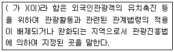
- 관광특구
- 관광단지
- 관광지
- 관광사업
(정답률: 61%)
38. 조경계획을 위한 분석과 종합과정에 대한 설명으로 틀린 것은?
- 분석은 관련 자료를 부분적으로 나누어 검토하는 것이며, 종합은 이들을 체계화시키고 중요도에 따라 우선순위를 결정하는 것이다.
- 분석과 종합을 위해서는 창의성 보다는 합리적 접근이 보다 많이 요구된다.
- 분석은 주로 정량적(定量的)특성을 지니며 종합은 주로 정성적(定性的)특징을 지닌다.
- 분석은 관련 자료를 분야별로 나누어 조사하는 것이며, 종합은 이들을 평가하여 대안 작성을 위한 기초를 마련하는 것이다.
(정답률: 66%)
39. 18홀 정규 골프장의 계획·설계 시 토지이용의 효율성을 고려할 때 490 ~ 575 야드(yard) 정도의 롱 홀(long hole)은 몇 개 정도 설치하는 것이 바람직한가?
- 2
- 4
- 6
- 10
(정답률: 62%)
40. 다음 그림에서 해발표고 225m와 235m의 두 지점 A~B사이는 몇[%] 경사 지역인가? (단, AB사이의 거리는 지표상의 거리임)
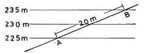
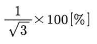
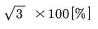
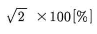
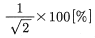
(정답률: 57%)
3과목: 조경설계
41. 오방색(五方色)에 대한 설명 중 틀린 것은?
- 오방색이란 우리나라의 전통색채에서 사용되어 오던 색이다.
- 오방색은 동, 서, 남, 북, 중앙의 5가지 방위로 이루어져 있다.
- 각 방위에 따른 색상, 오행, 계절, 방향, 풍수, 맛, 오륜 등이 있다.
- 기본색은 오정색이라 불렀으며 청(靑), 적(赤), 황(黃), 녹(綠), 백(白) 색이다.
(정답률: 74%)
42. 다음 도시경관(Townscape)에 관한 기술 중 적당하지 않은 것은?
- 플로어 스케이프(Floorscape)는 연못 혹은 호수 면과 같이 수평적인 경관을 말한다.
- 사운드 스케이프(Soundscape)는 도시속의 각종 소리의 종류나 크기와 관계와 있다.
- 카 스케이프(Carscape)는 대규모 주차장의 차 혼잡을 비평한 말이다.
- 와이어 스케이프(Wirescape)는 공중의 전기줄과 전화 줄의 보기 싫은 모습을 비난한 말이다.
(정답률: 57%)
43. P.D.Spreiregen은 건물의 높이(H)와 거리(D)의 비가 어느 정도일 때 공간의 폐쇄감이 완전히 소멸되고, 특징적 공간으로서의 장소 식별이 불가능해지는가?
- D/H = 1
- D/H = 2
- D/H = 3
- D/H = 4
(정답률: 65%)
44. Edward. T. Hall이 구분한 대인 간격거리에 적합하지 않은 것은?
- 0.45m 미만: 밀집거리
- 0.45m ~ 1.2m미만: 개체거리
- 1.2m ~ 3.6m미만: 사회거리
- 3.6m 이상: 업무거리
(정답률: 64%)
45. 등각투상도법(Iso-metrics)에 관한 설명 중 옳지 않은 것은?
- 평행도법의 일종이다.
- 보이는 면이 다 같이 강조된다.
- 모든 수직선은 수직으로 나타나며 서로 평행하다.
- 평면의 도형을 그대로 이용하기 때문에 작도가 편리하다.
(정답률: 47%)
46. 안개가 많거나 밤에도 멀리서 잘 보이며 가장 눈에 잘 띄는 조명의 색은?
- 빨강
- 노랑
- 파랑
- 초록
(정답률: 70%)
47. 다음 조경설계기준상의 설명 중 ( )안에 적합한 수치는?
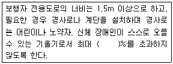
- 5
- 8
- 12
- 15
(정답률: 62%)
48. 다음 중 안내시설의 설계 시 검토 사항으로 가장 부적합한 것은?
- 보행자 등 이용자의 안전성을 고려한다.
- 외부 요인에 따른 변형 · 마모 등에 대한 유지 · 관리 등을 고려하여 설계한다.
- 안내시설은 인간 감성의 회복에 기여하고 환경친화성을 높일 수 있도록 설계한다.
- 다양한 유형의 안내시설물이 한 장소에 설치될 필요가 있을 경우에는 각 유형별로 여러개의 종합표지판을 나누어 배치한다.
(정답률: 65%)
49. 같은 도면에서 2종류 이상의 선이 중복되었을 때 가장 우선시 되는 선은?
- 치수 보조선
- 절단선
- 외형선
- 중심선
(정답률: 71%)
50. 경관조사방법 중 경관의 특징, 주위경관의 유사성 변화 등을 밝혀내기 위한 경관의 우세요소가 아닌 것은?
- 형태(form)
- 색채(color)
- 규모(scale)
- 질감(texture)
(정답률: 61%)
51. 그림과 같은 정면도와 평면도에 가장 적합한 우측면도는?
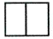
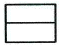
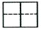
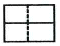
(정답률: 71%)
52. 조경구조물 중 『얕은 기초』의 설명에서 ( )안에 적합한 것은?
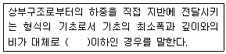
- 1.0
- 1.5
- 2.0
- 3.0
(정답률: 38%)
53. 고대 그리스에서 나타나고 있는 여러 작품(조각, 변화 등) 중 인체를 황금비로 구분하는 기준점의 신체 부위는?
- 배꼽
- 어깨
- 가슴
- 사타구니
(정답률: 74%)
54. 다음 중 평면도의 표제란에 포함되지 않는 것은?
- 기관정보
- 도면정보
- 시공자 정보
- 도면번호
(정답률: 68%)
55. 잔상(after image)에 대한 설명으로 틀린 것은?
- 잔상의 출현은 원래 자극의 세기, 관찰시간, 크기에 의존한다.
- 원래의 자극과 색이나 밝기가 반대로 나타나는 것은 음성잔상이다.
- 보색잔상은 색이 선명하지 않고 질감도 달라 면색(面色)처럼 지각된다.
- 잔상현상 중 보색잔상에 의해 보게 되는 보색을 물리보색이라고 한다.
(정답률: 48%)
56. 제도용지 A2의 크기는 A0용지의 얼마 정도의 크기인가?
- 1/2
- 1/4
- 1/8
- 1/16
(정답률: 74%)
57. 다음 그림의 착시(錯視)에 관한 설명 중 틀린 것은?
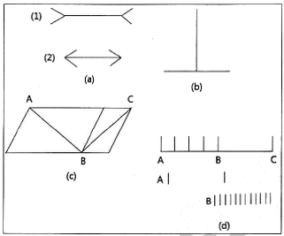
- (a) : 방향의 착시를 보여주는 상태에서 바깥쪽(2)으로 향한 선이 더 길어 보인다.
- (b) : 수평선보다도 수직선 편이 길게 보인다.
- (c) : 2개의 평행사변형 내에 있는 대각선의 길이가 동일하지만 다르게 보인다.
- (d) :단순한 선분보다도 분할선이 많은 선분이 길게 보인다.
(정답률: 70%)
58. 달리는 차안에서 바라보는 가로수가 관찰자의 이동과는 무관하게 변함없이 서 있음을 알게 하는 지각 원리는?
- 위치 항상성
- 크기 항상성
- 모양 항상성
- 색채 항상성
(정답률: 74%)
59. 조경설계기준상 배수시설의 설계시 고려해야 할 설명으로 틀린 것은?
- 녹지의 표면배수 기울기는 고려하지 않아도 된다.
- 배수에는 지표면 배수와 심토층 배수의 두 방법이 있다.
- 관거 이외의 배수시설의 기울기는 0.5% 이상으로 하는 것이 바람직하다.
- 개거배수는 지표수의 배수가 주목적이지만 지표 저류수, 암거로의 배수, 일부의 지하수 및 용수 등도 모아서 배수한다.
(정답률: 67%)
60. 조경설계기준상의 정원조경(공장) 중 다음 설명의 ( )안에 적합한 수치는?
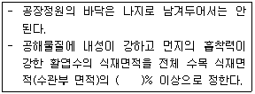
- 50
- 60
- 70
- 80
(정답률: 41%)
4과목: 조경식재
61. 지상부의 줄기가 목질화 되지 않는 식물은?
- 능소화
- 작약
- 모란
- 멀꿀
(정답률: 53%)
62. 잎이 2개씩 속생하는 수종은?
- 리기다소나무(Pinus rigida)
- 스트로브잣나무(Pinus strobus)
- 백송(Pinus bungeana)
- 반송(Pinus densiflora for. multicaulis)
(정답률: 62%)
63. 산울타리용으로 가장 적합한 수목은?
- 때죽나무(Styrax japonicus)
- 계수나무(Cercidiphyllum japonicum)
- 사철나무(Euonymus japonicus)
- 수양버들(Salix babylonica)
(정답률: 68%)
64. 멸종위기 야생생물 II급에 속하는 식물종은?(단, 야생생물 보호 및 관리에 관한 법률 시행 규칙을 적용한다.)
- 처녀치마(Heloniopsis koreana)
- 얼레지(Erythronium japonicum)
- 가시연(Euryale ferox)
- 초롱꽃(Campanula punctata)
(정답률: 45%)
65. 도시 내 소생물권과 관련된 설명으로 틀린 것은?
- 『자연환경보전법』에서 규정하는 소생태계의 개념을 포함하는 생물서식공간을 의미한다.
- 해당 지역의 자연환경 상황을 파악하여 '보전', '복원', '창조'의 기법을 조합하여 계획을 수립한다.
- 보존가치가 있는 생태계는 개발사업 이후부터 보호하되 집중적인 방법으로 대체 방안을 모색한다.
- 단위생태계로서의 소생물권과 생태계 네트워크로서의 시스템적 기능과 구조를 고려한다.
(정답률: 63%)
66. 상록활엽교목으로만 구성되어 있는 것은?
- 동백나무, 녹나무, 돈나무, 만병초
- 조록나무, 노각나무, 귀룽나무, 산사나무
- 해당화, 송악, 굴거리나무, 담팔수
- 가시나무, 후박나무, 녹나무, 구실잣밤나무
(정답률: 52%)
67. 비비추(Hosta longipes)에 관한 설명으로 틀린 것은?
- 백합과(科)식물이다.
- 7~9월에 연보라색 꽃이 핀다.
- 뿌리는 구근으로 되어 있고 인편번식을 한다.
- 숙근성 여러해살이풀로 관엽, 관화식물이다.
(정답률: 41%)
68. 인공조성지의 수목 생육환경과 관련하여 고려되어야 할 사항으로 가장 거리가 먼 것은?
- 유효토양의 과잉
- 토양공기의 부족
- 토양의 과습
- 식물양분의 결핍
(정답률: 53%)
69. 토양이 단립(團粒)구조를 갖게 하기 위한 것으로 틀린 것은?
- 배수를 좋게 한다.
- 퇴비 등의 유기질 비료를 준다.
- 사질 토양은 식토로 객토하는 것이 중요하다.
- 식질 토양에는 점토로 객토하는 것이 중요하다.
(정답률: 60%)
70. 수형이 원추형인 것은?
- Zelkoua serrata
- Sophora japonica
- platanus occidentalis
- Abies holophylla
(정답률: 50%)
71. 여름철 더위에 견디는 힘(耐署性)이 가장 강한 것은?
- Ryegrass류
- Bentgrass류
- Zoysia grass류
- Kentucky bluegrass류
(정답률: 58%)
72. 층층나무(Cornus controversa)에 관한 설명으로 틀린 것은? (문제 오류로 실제 시험에서는 모두 정답처리 되었습니다. 여기서는 1번을 누르면 정답 처리 됩니다.)
- 꽃은 흰색계열이다.
- 뿌리는 천근성이다.
- 가지는 계단상으로 돌려나고 층을 형성한다.
- 열매는 핵과로 8월말 ~ 10월초에 검은색으로 성숙한다.
(정답률: 67%)
73. 화살나무(Euonymus alatus)의 특징으로 틀린 것은?
- 낙엽활엽관목
- 잎에 있는 날개가 독특함
- 종자는 황적색 종의로 싸여 있으며 백색
- 가을의 붉은색 단풍이 감상가치가 높음
(정답률: 50%)
74. 무성(영양)번식에 대한 설명으로 틀린 것은?
- 영양번식에 의한 식물체는 종자번식에 비해 대량번식이 쉽다.
- 영양번식에 의한 식물체는 생장과 개화가 종자식물에 비해 빠르다.
- 접목은 분리된 두 식물체의 조직을 유합시켜 하나의 식물체를 만드는 방법이다.
- 분구는 백합류, 칸나 등의 구근을 지니는 조경식물의 지하부 구근을 분주하여 번식하는 방법이다.
(정답률: 52%)
75. 소사나무에 해당하는 속명은?
- Alnus
- Carpinus
- Celtis
- Quercus
(정답률: 48%)
76. 햇빛을 충분히 받아야만 생육이 좋은 양수는?
- 자작나무(Betula platyphylla)
- 감탕나무(Ilex integra)
- 마가목(Sorbus commixta)
- 노각나무(Stewartia pseudocamellia)
(정답률: 51%)
77. 식재수량 산정 결과, 교목 20주, 관목 100주가 산출되었다. 이 중 상록수의 식재 규정 수량은?(단, 국토교통부 조경기준을 적용한다.)
- 교목 : 2주 이상, 관목 : 10주 이상
- 교목 : 2주 이상, 관목 : 20주 이상
- 교목 : 4주 이상, 관목 : 10주 이상
- 교목 : 4주 이상, 관목 : 20주 이상
(정답률: 55%)
78. 다음 [보기]의 ( )안에 적합한 용어는?
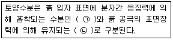
- ㉠ 결합수, ㉡ 모관수
- ㉠ 결합수, ㉡ 중력수
- ㉠ 흡습수, ㉡ 모관수
- ㉠ 흡착수, ㉡ 결합수
(정답률: 47%)
79. 국화과(科)에 해당하지 않는 것은?
- 흰민들레
- 벌개미취
- 비비추
- 구절초
(정답률: 53%)
80. 내습성이 가장 강한 수종은?
- 노간주나무(Juniperus rigida)
- 싸리(Lespedeza bicolor)
- 가죽나무(Ailanthus altissima)
- 낙우송(Taxodium distichum)
(정답률: 56%)
5과목: 조경시공구조학
81. 다음 중 경비에 속하지 않는 것은?
- 기계경비
- 산재보험료
- 외주가공비
- 작업부산물
(정답률: 50%)
82. 다음 중 통계적 품질관리(QC)의 도구가 아닌 것은?
- 산포도
- 히스토그램
- 기능계통도
- 특성요인도
(정답률: 47%)
83. 50년 강우빈도에 대한 강우강도가
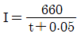
이라고 주어졌다면 강우강도는 약 얼마인가? (단, 유달시간은 유입시간 5분과 900m를 유속 1.5m/sec로 흘러내리는 유하시간으로 한다.)- 21.9mm/hr
- 43.85mm/hr
- 65.35mm/hr
- 130.69mm/hr
(정답률: 36%)
84. 대부분의 살수기(撒水器)는 삼각형이나 사각형의 고유한 살수단면을 가지게 되는데 그중 삼각형 형태로 배치하려고 할 때 열과 열사이의 거리는 살수기 간격의 어느 정도로 하여야 효과적인가?
- 같은 간격의 거리
- 살수기 간격의 약 0.87배
- 살수기 간격의 약 0.5배
- 살수기 간격의 약 0.37배
(정답률: 65%)
85. 조경공사 표준시방서에서 공사기간에 관한 설명으로 틀린 것은?
- 시공 후 잔류침하에 의한 후속 공사물의 파손위험이 예상되는 경우에는 잔류침하가 허용범위 내에 도달할 때까지의 기간을 감안하여 충분한 공사기간을 설정해야 한다.
- 준공일자와 관련하여 공사여건상 불가피하게 식재 부적기에 식재하여야 할 경우 감독자의 승인을 받아 식재공사를 시행하되 부적기에 필요한 수목양생조치를 추가 실시하여야 한다.
- 식재공사 기한이 차기의 식재적기로 이월될 경우, 일반적으로 식재공사를 제외한 타공사의 공사기한도 식재공사와 같이 이월된다.
- 이월된 식재공사는 이월공사기간에도 불구하고 식재적기 개시일로부터 최소 15일 이상의 공기가 확보되어야 한다.
(정답률: 65%)
86. 『소운반의 운반거리』설명 중 ( )안에 포함될 수 없는 것은?
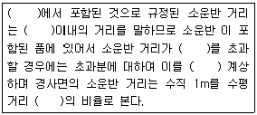
- 품
- 15m
- 6m
- 별도
(정답률: 60%)
87. 표준시방서에서 콘크리트 비비기의 설명으로 틀린 것은?
- 콘크리트의 재료는 반죽된 콘크리트가 균질하게 될 때까지 충분히 비벼야 한다.
- 믹서 안의 콘크리트를 전부 꺼낸 후가 아니면 믹서 안에 다음 재료를 넣지 않아야 한다.
- 비비기 시간은 시험에 의해 정하는 것을 원칙으로 한다.
- 비비기는 미리 정해 둔 비비기 시간의 5배 이상으로 계속하여야 한다.
(정답률: 69%)
88. 콘크리트 슬럼프 시험(slump test)과 관련된 설명 중 틀린 것은?
- 슬럼프 콘의 각 층은 다짐봉으로 고르게 한 후 진동기로 다진다.
- 다짐봉은 지름 16mm, 길이 500~600mm의 강 또는 금속제 원형봉으로 그 앞 끝을 반구 모양으로 한다.
- 슬럼프 콘은 윗면의 안지름이 100mm, 밑면의 안지름이 200mm, 높이 300mm 및 두께1.5mm 이상인 금속제로 한다.
- 슬럼프 콘은 수평으로 설치하였을 때 수밀성이 있는 강제평판 위에 놓고 누르고, 시료를 거의 같은 양의 3층으로 나눠서 채운다.
(정답률: 42%)
89. 목재의 절취단면을 나타내는 용어가 아닌 것은?
- 횡단면
- 접선단면
- 방사단면
- 수심단면
(정답률: 46%)
90. 점토의 물리적 성질에 관한 설명 중 옳은 것은?
- 가소성은 점토입자가 클수록 좋다.
- 압축강도는 인장강도의 약 5배 정도이다.
- 기공률은 20~50%로 보통상태에서 10% 내외이다.
- 철산화물이 많으면 황색을 띠게 되고, 석회물질이 많으면 적색을 띠게 된다.
(정답률: 42%)
91. 공원에 설치되는 조명과 관련된 설명 중 '휘도'에 관한 내용으로 맞는 것은?
- 방사속 중에서 가시광선의 방사속을 눈의 감도를 기준으로 하여 측정한 것
- 발광체가 발하는 광속의 밀도
- 단위면에 수직으로 투하된 광속밀도
- 광원면에서 어느 방향의 광도를 그 방향에서의 투영면적으로 나눈 것
(정답률: 49%)
92. 암절토 비탈면 등 환경조건이 극히 불량한 지역의 녹화공법으로 가장 적합한 것은?
- 식생매트공
- 잔디떼심기공
- 일반묘식재공법
- 식생기반재뿜어붙이기공
(정답률: 53%)
93. 그림과 같은 내민보에 모멘트와 집중하중이 작용한다. 지점 B에서의 굽힘 모멘트의 크기는 몇 kNm인가 ?
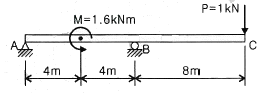
- 1.0
- 3.2
- 4.8
- 8.0
(정답률: 24%)
94. 조경공사 재료의 할증률이 바르게 짝지어진 것은?
- 초화류 : 5%
- 잔디 : 10%
- 조경용수목 : 5%
- 원석(마름돌용) : 10%
(정답률: 56%)
95. 흙을 쌓은 경사면이 미끄러진 형태로 안정되는데 이 경사면의 각도를 무엇이라 하는 가?
- 마찰각(摩擦角)
- 내부 마찰각
- 전도각(轉倒角)
- 휴식각(休息角)
(정답률: 67%)
96. 바람의 속도압이 98kgf/m2가 되는 곳에 조적식 담장을 쌓을 때 담장을 지지하기 위한 기둥사이의 최대 허용거리는 얼마인가?(단, 최대비율 L/T=18, 담장의 폭은 19cm(1.0B)로한다.)
- 25.2m
- 34.2m
- 2.52m
- 3.42m
(정답률: 35%)
97. 구조물에 작용하는 하중 중 바람 및 지진 또는 온난한 지방의 눈하중과 같이 구조물에 잠시 동안만 작용하는 하중을 말하는 것은?
- 이동하중
- 집중하중
- 고정하중
- 단기하중
(정답률: 66%)
98. 콘크리트의 시공 관련 설명으로 틀린 것은?
- 연직 시공이음에는 지수판 등의 재료 및 도구의 사용을 원칙으로 한다.
- 팽창제는 습기의 침투를 막을 수 있는 사이로 또는 창고에 시멘트 등 다른 재료와 혼입 저장하는 것이 효과적이다.
- 소요 품질을 갖는 수밀콘크리트를 얻기 위해서는 적당한 간격으로 시공 이음을 두어야하며, 그 이음부의 수밀성에 대하여 특히 주의하여야 한다.
- 수밀콘크리트에 사용하는 혼화재료는 적합한 공기연행제, 감수제 또는 포졸란 등을 사용하는 것을 원칙으로 한다,
(정답률: 64%)
99. 초점거리가 210mm인 카메라로 표고 500m 지형을 축척 1/20000으로 촬영한 연직사진의 촬영고도는?
- 4⑤0m
- 4250m
- 4500m
- 4700m
(정답률: 31%)
100. 시험재의 전건무게가 1000g이고, 건조 전에 시험재의 무게가 1200g 일 때 건량기준 함수율은 얼마인가?
- 20%
- 25%
- 30%
- 35%
(정답률: 63%)
6과목: 조경관리론
101. 멀칭(Mulching)의 직접적 효과가 아닌 것은?
- 병충해의 발생억제
- 토양수분의 유지
- 풍화작용의 촉진
- 잡초의 발생억제
(정답률: 66%)
102. 칼륨(K) 성분량 10kg을 황산칼륨(보증성분량 : 48%)으로 시용하려면 황산칼륨은 대략 몇 kg을 주어야 하는가?
- 50kg
- 40kg
- 30kg
- 20kg
(정답률: 33%)
103. 바이러스 감염에 의한 수목병의 대표적인 병징에 해당되지 않는 것은?
- 위축
- 그을음
- 잎말림
- 얼룩무늬
(정답률: 48%)
104. 훈증제 농약의 구비 조건으로 옳지 않은 것은?
- 기름이나 물에 잘 녹아야 한다.
- 휘발성이 커서 확산이 잘 되어야 한다.
- 비 인화성이어야 하고 침투성이 커야 한다.
- 훈증 목적물에 이화학적 변화를 일으키지 않아야 한다.
(정답률: 47%)
1⑤. 골프장 그린(잔디) 관리, 재배 상 주의할 점에 해당되지 않는 것은?
- 배수를 원활히 해야 한다.
- 통풍을 양호하게 한다.
- 비료를 많이 자주 준다.
- 살수 과잉으로 인한 그린(green)의 과습은 피한다.
(정답률: 68%)
106. 일반적인 조경관리 절차로 가장 적합한 것은?
- 관리목표설정 → 관리계획수립 → 관리조직구성 → 업무확정 → 업무수행 → 업무평가
- 관리조직구성 → 관리계획수립 → 관리목표설정 → 업무확정 → 업무수행 → 업무평가
- 관리목표설정 → 관리조직구성 → 업무확정 → 업무수행 → 관리계획수립 → 업무평가
- 관리조직구성 → 관리목표설정 → 업무확정 → 업무수행 → 관리계획수립 → 업무평가
(정답률: 57%)
107. 다음 중 향나무 녹병균은 어떤 것인가?
- 동종기생균
- 이종기생균
- 유주포자균
- 표면서식균
(정답률: 54%)
108. 토양반응(pH)이 낮아질 때 토양 내 인산의 고정량은 어떻게 되는가?
- 상관이 없다.
- 더욱 커진다.
- 적어진다.
- 적어지다 커지다를 반복하다가 한계점 도달 시 적어진다.
(정답률: 43%)
109. 보수점검의 법칙에 해당되는 것은?
- 시비량과 수량과의 관계
- 시비량과 품질과의 관계
- 비료성분과 증수율과의 관계
- 비료의 흡수율과 최소양분율과의 관계
(정답률: 41%)
110. 옥외조명기구를 청소하는 방법으로 강한 알칼리성, 산성의 약품을 사용하면 표면의 부식이나 산회피막이 벗겨질 위험이 있는 재료는?
- 알루미늄
- 법랑
- 합성수지
- 플라스틱
(정답률: 50%)
111. 식물의 즙액을 흡즙하는 입틀 구조를 갖지 않은 곤충은?
- 버즘나무방패벌레
- 느티나무벼룩바구미
- 솔껍질깍지벌레
- 가루나무좀
(정답률: 39%)
112. 소나무재선충병에 대한 설명으로 옳지 않은 것은?
- 수분 이동 통로를 막아 고사시킨다.
- 소나무먹좀벌이 천적이므로 생태학적 방제에 의존할 수 밖에 없다.
- 감염 후 수 주내에 급속히 말라 죽으며, 치사율이 100%이다.
- 이동능력이 없이 공생관계인 솔수염하늘소를 통해 전파된다.
(정답률: 55%)
113. 토양수분포텐셜(soil water potential)의 단위로 쓰이지 않는 것은?
- pF
- %
- bar
- kPa
(정답률: 51%)
114. 공사장 관리를 위한 주변 가설울타리의 설명 중 ( )안에 해당되는 것은?
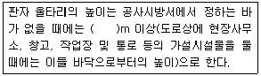
- 1.2
- 1.8
- 2.4
- 3.0
(정답률: 51%)
115. 광엽 또는 화본과 잡초의 분류로 옳은 것은?
- 화본과잡초: 여뀌
- 광엽잡초: 돌피
- 광엽잡초: 명아주
- 광엽잡초: 바랭이
(정답률: 47%)
116. 작물보호제(농약) 살포시 주의사항으로 옳지 않은 것은?
- 살포 전·후 살포기를 반드시 씻는다.
- 이상기후(이상고온, 이상저온, 과습, 건조 등)에서는 약해의 우려가 있으니 살포를 자제한다.
- 약을 뿌릴 때에는 마스크, 보안경, 고무장갑 및 방제복 등을 착용 후 바람을 등지고 살포 작업한다.
- 농약을 섞어 뿌리고자 할 때에는 반드시 1년 정도 경과해 안정된 상태에서 사용한다.
(정답률: 67%)
117. 생태연못의 유지관리에 대한 설명으로 가장 거리가 먼 것은?
- 모니터링은 조성 직후부터 1년, 2년, 3년, 5년, 10년 등의 주기로 한다.
- 모니터링은 가급적 지역주민, NGO, 전문가 등이 함께 참여하도록 한다.
- 여름철에 성장한 수초는 겨울철에 말라서 연못 내에 잔존하게 되면 연못내 식물의 영양분이 되므로 지속적으로 유지시킨다.
- 붉은귀거북, 블루길, 베스, 비단잉어 등의 외래종은 제거하도록 한다.
(정답률: 57%)
118. 옥외레크레이션의 관리체계를 세울 때 주요기능 관점의 3가지 부체계 기본요소에 해당되지 않는 것은?
- 이용자관리
- 자원관리
- 서비스관리
- 매스미디어관리
(정답률: 63%)
119. 다음 주민참가의 단계 중 시민권력 단계에 속하지 않는 것은?
- 자치관리
- 권한이양
- 파트너 쉽
- 유화
(정답률: 51%)
120. 조경시설물 정비, 점검방법으로 적합하지 못한 것은?
- 배수구는 정기적으로 점검하여 토사나 낙엽에 의한 유수방해를 제거한다.
- 어린이공원 유희시설물의 회전부분은 충분한 윤활유 공급으로 회전을 원활히 해준다.
- 아스팔트 도로포장은 내구성이 큰 포장이므로 전면개수까지 점검사항에서 제외한다.
- 표지, 안내판 등의 도장(塗裝)상태나 문자는 상시점검 보수한다.
(정답률: 68%)